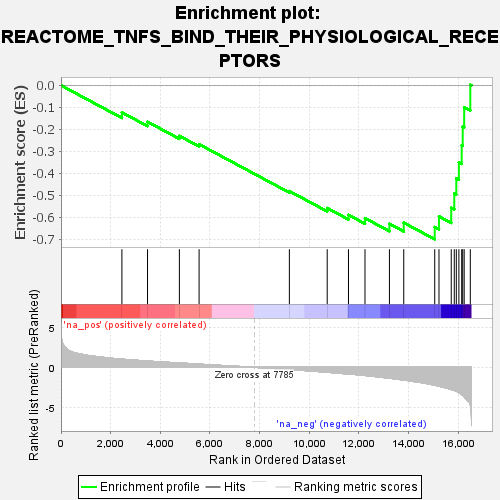
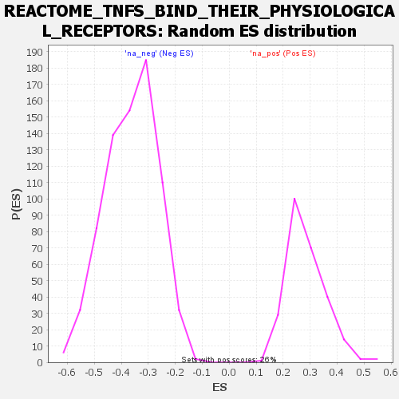

| | | Dataset | all_genes |
| Phenotype | NoPhenotypeAvailable |
| Upregulated in class | na_neg |
| GeneSet | REACTOME_TNFS_BIND_THEIR_PHYSIOLOGICAL_RECEPTORS |
| Enrichment Score (ES) | -0.70083594 |
| Normalized Enrichment Score (NES) | -1.9337128 |
| Nominal p-value | 0.0 |
| FDR q-value | 0.0020834405 |
| FWER p-Value | 0.051 |
Table: GSEA Results Summary

Fig 1: Enrichment plot: REACTOME_TNFS_BIND_THEIR_PHYSIOLOGICAL_RECEPTORS
Profile of the Running ES Score & Positions of GeneSet Members on the Rank Ordered List

Fig 2: REACTOME_TNFS_BIND_THEIR_PHYSIOLOGICAL_RECEPTORS: Random ES distribution
Gene set null distribution of ES for REACTOME_TNFS_BIND_THEIR_PHYSIOLOGICAL_RECEPTORS